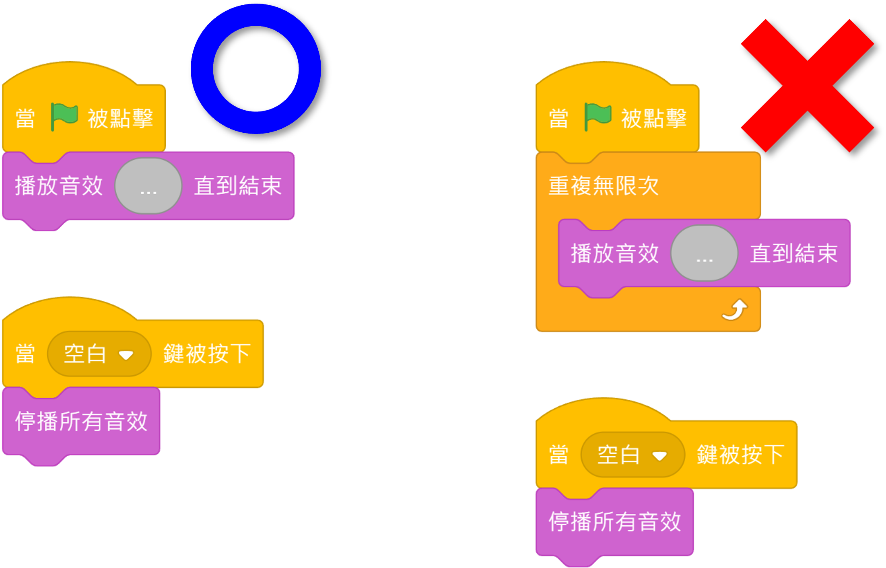

聲音暫停與再次播放
聲音暫停與再次播放

- 製作一個可以暫停與播放聲音的控制按鍵，對於具有背景音樂或特殊音效的遊戲來說是很有必要的。
- 要製作聲音暫停/播放按鍵，需要一個用來控制的角色，這個角色要具有可表示「聲音暫停」和「聲音播放」意義的二種造型以供切換。
- 當使用
停播所有音效要來將聲音暫停時，你會發現，它對於是使用〖重複積木〗來播放的聲音只具有瞬間的作用，短暫停止後，聲音仍會繼續播放。 - 當使用
音量設為()%，將值設為「0」來暫停聲音播放時，是有效的，然而使用此腳本時，聲音並不會真正暫停，只是繼續以無聲方式播放。因此，當再次播放時，聲音開始處是不會與暫停時相同的位置。 - 而由於Scratch並沒有提供有關「音樂暫停」功能的積木，所以我們只能透過將
聲音效果[音高 v]設為()的「音高」值設為「-Infinity」(負無限小)來將播放的速度降到最慢，再同時將音量設為()%的值設為「0」，用來模擬聲音暫停的情境，而實際上聲音還是在繼續播放，只是播放速度非常慢而已。


聲音暫停與再次播放
此腳本需有一個角色，它同時具有「播放」和「暫停」二種造型。
| 聲音正播放時顯示造型 | 聲音暫停時顯示造型 |
|---|---|
| 表示聲音正在播放時，可供選擇的狀態是pause | 表示聲音暫停時，可供選擇的狀態是play |
🎶播放聲音
使用重複積木來循環播放聲音。
當 @greenflag 被點擊 造型換成(pause v)//聲音正播放時的造型狀態 重複無限次 播放音效(...::grey)直到結束//音樂是可選的 end
🎵暫停聲音
音量設為 (0) % 聲音效果 [音高 v] 設為 ((-1)/(0))//可得到「-Infinity」值(負無限小)
🎵再次播放
音量設為 (100) % 聲音效果 [音高 v] 設為 (0)